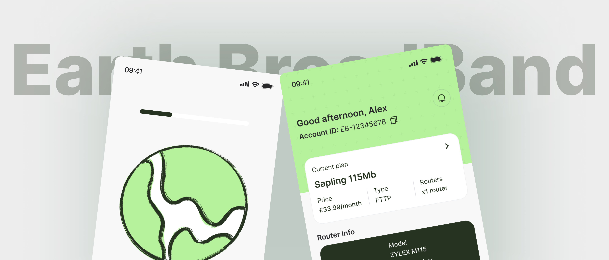
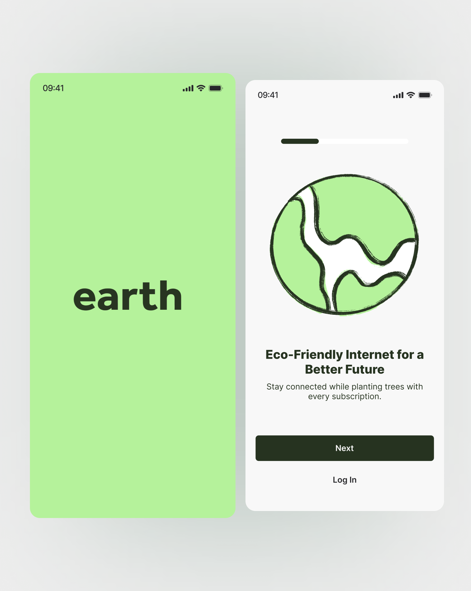
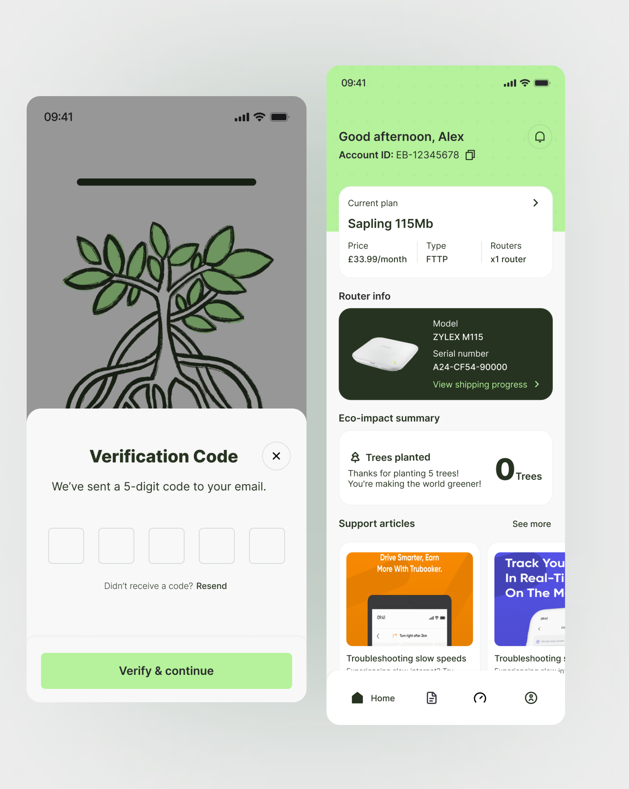

Earth Broadband
I designed a mobile account experience that puts broadband plan, router, connection, and support information in one place. The aim was to make technical details easier for customers to understand and act on.

THE BRIEF
The brief was to give Earth Broadband customers a mobile place to manage their service. They needed to see account and connection information, check their plan, and find help without moving between separate channels. The experience also needed to reflect the brand’s environmental focus.
MAKING SERVICE DETAILS CLEAR
Broadband accounts can contain a lot of technical information: speeds, plan types, router details, installation progress, and billing. I had to decide what deserved attention first. I organized the app around the questions a customer is likely to have: What plan am I on? Is my equipment ready? How is my connection doing? Where do I go for support?
THE ACCOUNT HOME
The home screen gives the current plan its own clear card, with the monthly price and service type beside it. Router information and shipping progress sit directly below, so customers can find the next practical detail without hunting through settings.
The wider app groups connection checks, speed tests, plan management, and support into straightforward sections. I kept the account dashboard focused on the information people would return to most often, then gave the other tasks clear places to go.
BRAND AND UTILITY
I brought the eco-impact summary into the account view alongside service information, rather than leaving it only in the onboarding message. The green palette, plant illustration, and simple cards connect the app to Earth Broadband’s identity while keeping the account details readable.
The interface designs
What that became.
The screens show the first welcome into the app and the account information customers can return to.

